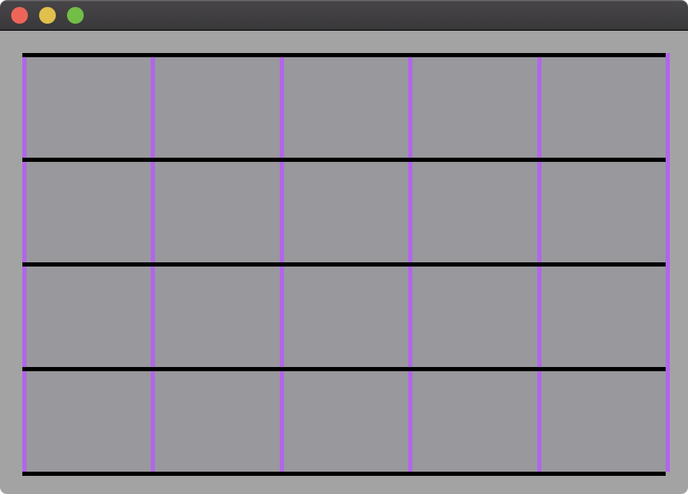

A GeometryReader can be used to equally space lines in a view even when that view changes size. This is accomplished by using the width and height of the container view to determine the spacing of the lines.

import SwiftUI
struct ContentView: View {
let xSteps = 5 // purple lines for x-axis grid
let ySteps = 4 // black lines for y-axis grid
var body: some View {
ZStack(alignment: .top) {
GeometryReader { geometry in
Rectangle()
.fill(Color.gray)
// x-axis grid shown as purple lines
ForEach(0..<self.xSteps+1) {
Rectangle()
.fill(Color.purple)
.frame(width: 3)
.offset(x: geometry.size.width / CGFloat(self.xSteps) * CGFloat($0), y: 0.0)
}
// y-axis grid shown as black lines
ForEach(0..<self.ySteps+1) {
Rectangle()
.fill(Color.black)
.frame(height: 3)
.offset(x: 0.0, y: geometry.size.height / CGFloat(self.ySteps) * CGFloat($0))
}
}
}
.frame(minWidth: 400, minHeight: 300)
.padding()
.background(Color.secondary)
}
}
Gavin Wiggins © 2025
Made on a Mac with Genja. Hosted on GitHub Pages.